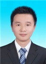

侯茂祥
博士
研究方向 :
光纤传感技术、光子晶体光纤填充.
联系方式 :
15071202363
邮箱地址 :
d201277029@hust.edu.cn
通信地址 :
地址广东省深圳市南山区深圳大学光电所329室
教育经历
2011/09-2016/09，华中科技大学，物理学院，博士，导师：陆培祥
2007/09-2011/06，东北大学，理学院，本科
工作经历
2016/08～2017/02, 深圳大学, 深圳市物联网光子器件与传感系统重点实验室,博士后,合作导师:王义平
科研项目
[1] 中国博士后基金面上项目，耐温光纤布喇格光栅阵列高效刻写技术（2017M612720），2017/06-2018/12，主持
[2] 深圳市科技计划基础研究项目，飞秒激光双光束干涉集成刻写光纤光栅技术（JCYJ20170302154614941），2017/06-2019/05，主持
代表性科研成果
[1] Maoxiang Hou, Feng Zhu, Ying Wang, Yiping Wang, Changrui Liao, Shen Liu, Peixiang Lu. Antiresonant reflecting guidance mechanism in hollow-core fiber for gas pressure sensing. Optics Express, 2016, 24(24): 27890-27898. (中科院二区, IF= 3.307)
[2] Maoxiang Hou, Ying Wang, Shuhui Liu, Zhihua Li, and Peixiang Lu. Multi-Components Interferometer Based on Partially Filled Dual-Core Photonic Crystal Fiber for Temperature and Strain Sensing. IEEE Sensors Journal 16.16 (2016): 6192-6196. (中科院三区, IF=2.512)
[3] Maoxiang Hou, Ying Wang, Shuhui Liu, Jiangtao Guo, Zhihua Li, and Peixiang Lu. Sensitivity-enhanced pressure sensor with hollow-core photonic crystal fiber. Journal of Lightwave Technology, 2014, 32(23): 4035-4039.(中科院二区, IF= 3.671)
[4] S. Liu, Y. Wang, Maoxiang Hou, Jiangtao Guo, Zhihua Li, and Peixiang Lu. Anti-resonant reflecting guidance in alcohol-filled hollow core photonic crystal fiber for sensing applications. Optics express, 2013, 21(25): 31690-31697. (中科院二区, IF= 3.307)
[5] S. Liu, N. Liu, Maoxiang Hou, Jiangtao Guo, Zhihua Li, and Peixiang Lu. Direction-independent fiber inclinometer based on simplified hollow core photonic crystal fiber. Optics letters, 2013, 38(4): 449-451. (中科院二区, IF= 3.416)